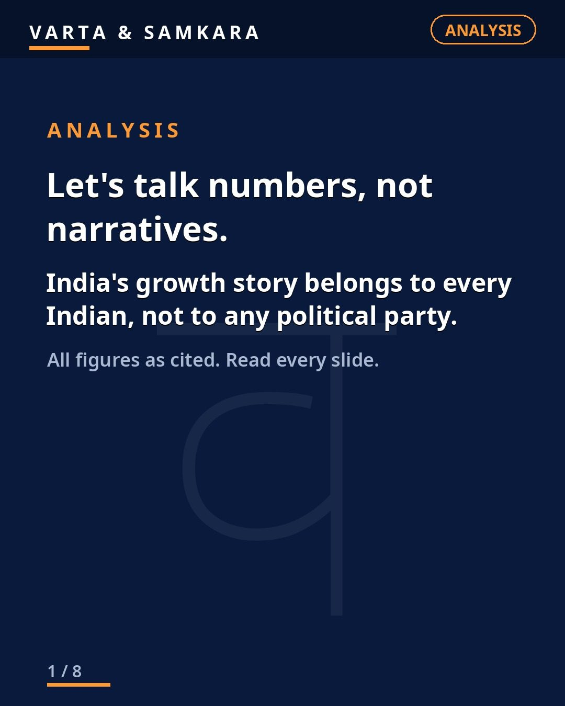
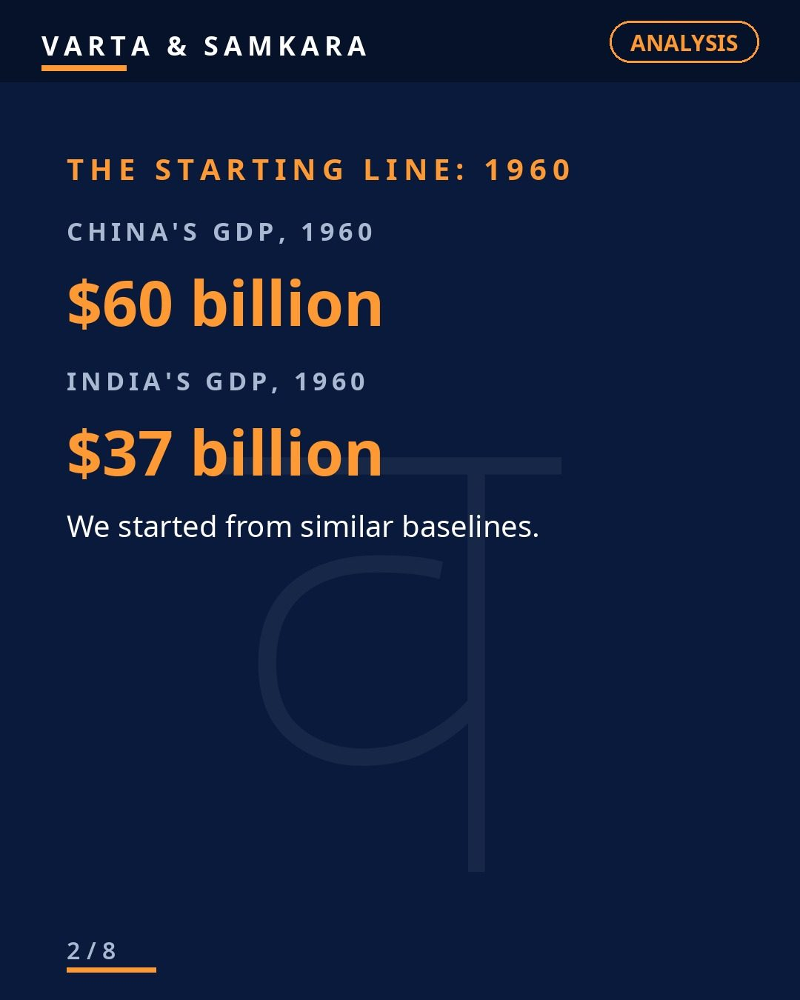
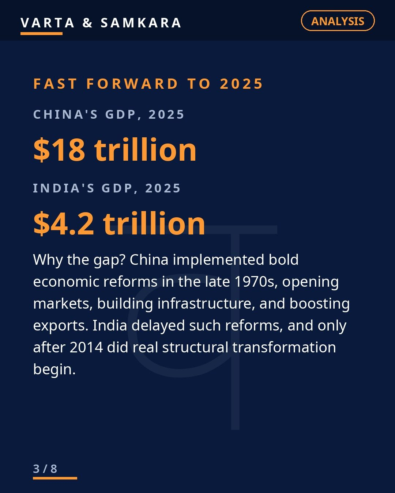
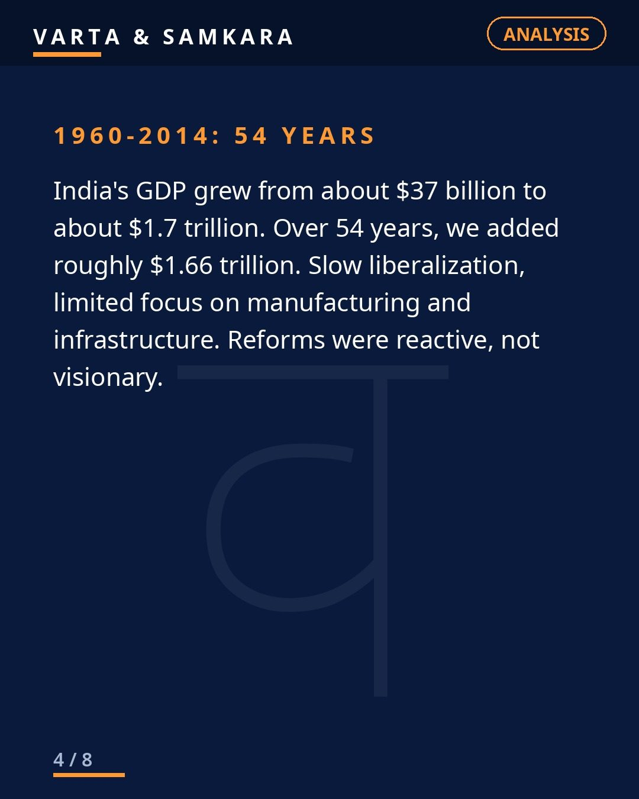
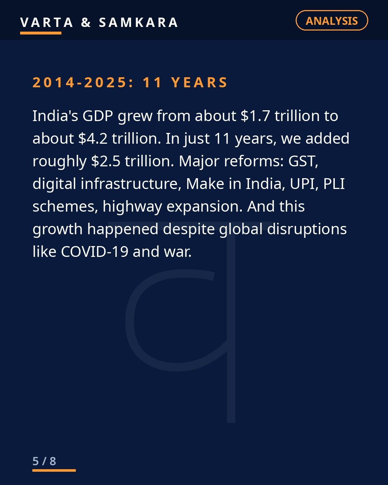
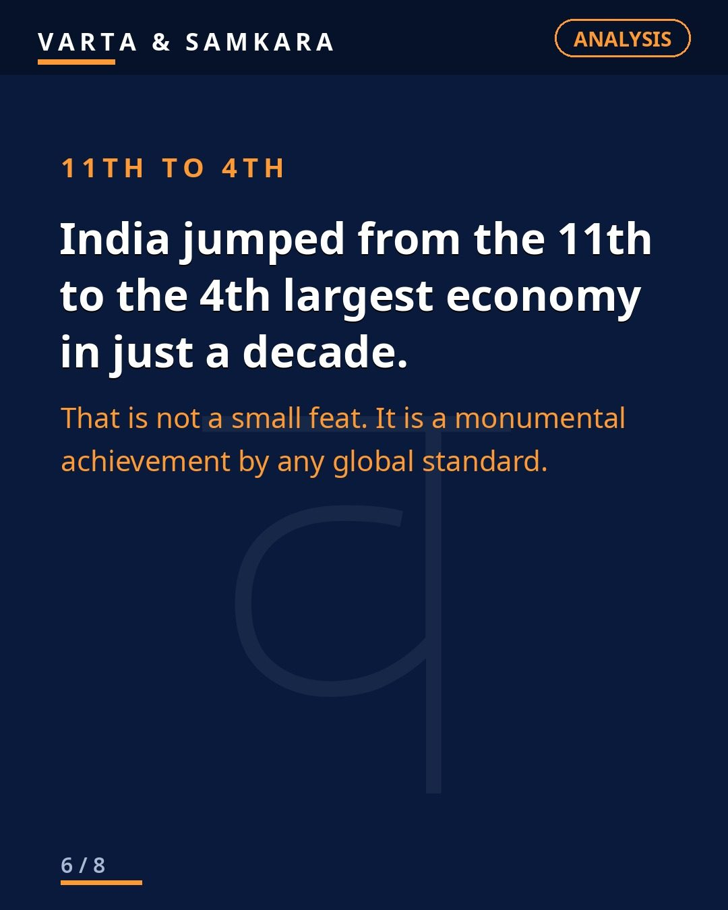
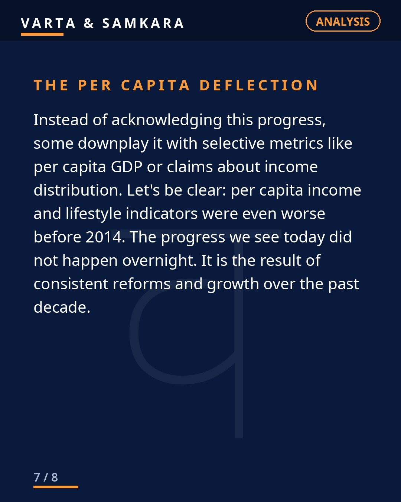

Opinion
ANALYSIS | Let's talk numbers, not narratives.

Let's talk numbers, not narratives. Strip away the slogans, the party flags, the prime-time shouting, and look at what actually happened to the Indian economy between 1960 and 2025. The numbers tell a story nobody needs to embellish.
1960: Similar baselines
1960: China's GDP was 60 billion dollars. India's was 37 billion dollars. Similar baselines. Two giant Asian countries, both poor, both starting the long climb at roughly the same point. Whatever differences existed then were differences of degree, not of kind.
2025: The divergence
2025: China stands at 18 trillion dollars. India at 4.2 trillion dollars. China pulled far ahead, and there is no honest way to deny it. But look at India's own trajectory instead of only the comparison, because that is where the real story is.
From 1960 to 2014, India added about 1.66 trillion dollars over 54 years. From 2014 to 2025, India added about 2.5 trillion dollars in just 11 years. In other words, India added more wealth in the last eleven years than in the previous fifty-four combined. During that run, the country jumped from the 11th to the 4th largest economy in the world.
What the numbers actually prove
These figures prove something important and limited at the same time. They prove that India's economic engine accelerated dramatically in the last decade. A jump from 11th to 4th in the global ranking is not an accounting trick. It reflects real output, real businesses, real incomes.
But the numbers do not prove that everything is fine. Per capita income still lags far behind. The China gap is still enormous. Growth has not reached everyone equally, and the quality of jobs remains a serious question. Honest celebration of progress and honest criticism of its gaps can exist in the same head. They should.
This is not about any political party
This is not about any political party. It is about every Indian's progress. Economies are built by hundreds of millions of people: the farmer, the shopkeeper, the coder, the truck driver, the small factory owner. Governments set conditions, but people do the work. The 2.5 trillion added in eleven years belongs to all of them.
That is why the numbers should be above partisan fighting. When one side denies the progress, it insults the people who created it. When the other side treats the numbers as the end of the discussion, it ignores the people the progress has not reached yet.
The only sane attitude
Celebrate what's right. Improve what's wrong. But never deny the progress.
From 37 billion to 4.2 trillion in sixty-five years, with the bulk of it in the last stretch, that is one of the great economic stories of our time. Say it plainly, fix what is broken, and keep climbing. (Figures as cited.)
In pictures






Source: Analytical (user viewpoint, figures as cited)
Visuals: Original text graphics
See the original reel / carousel with motion graphics on Instagram.
View on Instagram